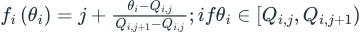

整体概括
预测的是雷达电离层散射概率分布
作者以 SuperDARN 与 SECIRA 雷达记录为依据，将空间天气参数和散射点坐标输入多尺度神经网络，预测高纬十米尺度不规则体相关的电离层散射概率。主要输出是在磁纬、磁地方时上的空间分布，而非电子总含量或接收机坐标。论文的价值在于处理稀疏观测与天气历史的组合，不能直接把概率拟合效果翻译成闪烁强度或 GNSS 定位精度提升。
对照原文证据
This paper describes an approach to constructing nowcast and forecast predictive models for the occurrence of high-latitude decameter ionospheric irregularities based on SuperDARN and SECIRA radar data and space weather parameters. The method relies on self-learning pattern recognition in the dynamics of space weather parameters, that influence the irregularities formation. The proposed approach is a data-driven, multiscale method in which the spatial distribution of irregularities is approximated using a neural network of an original architecture, inspired by graph neural networks.This paper describes a predictive model for the probability of observing the high-latitude ionospheric irregularities based on SuperDARN and SECIRA radar data.把观测到什么与物理存在什么分开
本文没有把每次收到雷达回波都当成不规则体存在的直接真值，而是区分“收到信号的概率”和“已收到信号属于电离层散射的条件概率”。最终发生概率依赖额外的可探测性近似。这个区分很重要：没有回波可能来自停机、传播条件、吸收或噪声，而不一定表示没有不规则体；模型给出的连续区域也不是新增的全覆盖独立观测。
对照原文证据
Thus, we need to construct two models: the first (for P(OBS|\theta_{s}) ) predicts where, when, and under what conditions we observe signals by radars, while the second (for P(IS|OBS,\theta_{s}) ) allows us to determine what fraction of the received signals is ionospheric scattering.Forecasting the spatiotemporal distribution of irregularities has significant problems: radar observations may be missing during certain periods (e.g., due to radar downtime, signal absorption in the ionospheric D/E layers or high noise level, radiowave propagation conditions or data unavailability); radar fields of view do not cover the entire globe; and scattering is observed in only small regions in radar field-of-view.Research gap
输入选择、历史效应与空间外推需要一起考虑
作者把建模困难拆为天气输入怎么选、时间动态怎么利用，以及观测稀疏区域如何进行空间近似。仅用当前指数的回归难以表示不同驱动的历史作用，只在有观测的位置逐点预测又难以形成连续空间分布。本文让坐标成为查询条件，并从各驱动的历史中学习非线性过滤特征。这是作者问题设定的归纳，不代表本站已证明它相对全领域方法都具有独创性。
对照原文证据
Problem 1: selection of model input parameters. To solve this problem, the following approaches are typically used:Problem 2: taking into account the temporal dynamics of parameters. Typically, the following approaches are used to solve this problem:Problem 3: choosing a method for spatial approximation of the model to areas where there are no observations. The following approaches are used to solve this problem:The method uses pattern recognition over the sequences of input parameters to improve the prediction quality. The input model parameters are found as a minimal set optimized for model quality, observation coordinates are used as separate model inputs.全局天气有序，雷达点集却不应被强加采样顺序
不同时间可用的雷达散射点数量和位置会变，但空间天气序列始终按时间排列。作者将每个时刻看成天气根节点连接多个观测节点的简化图，使时间记忆只沿稳定存在的天气节点传递，再对各空间节点作查询。这个结构回应的是有序序列与无序点集的组合问题；不能据此断言所有循环网络或生成模型在其他稀疏数据任务中都不可用。
对照原文证据
However, our graphs actually have a very simple and similar structure (shown in Fig. 3 A): a level-1 tree where the root node holds geomagnetic and solar parameters, while the numerous branches contain only the radar data - geomagnetic coordinates and the probabilities P(IS|OBS,\theta_{s}) we try to predict.As already discussed, the NN operates on unordered radar data (scatering positions) for given moment. In contrast, the RN operates on the ordered subset of the dataset (space weather parameters), processing it in strict temporal order, and this allows the extraction of temporal patterns that are most significant for the prediction.算法主线

原图由 arXiv 加载；若未显示，可打开下方原图链接。
跟着原图读
- 先看上部图结构：数量变化不等于时间缺失
天气节点沿时间串联，下面每组雷达点数量不同，各点携带磁纬、磁地方时和训练目标。它强调空间样本没有固定顺序；图中的点不代表网络每次都覆盖整个半球。
- 再看中部当前与预报训练如何错开时间
当前模式把同一目标时刻与截至该时刻的天气历史对齐；预报模式将天气最新记录与雷达目标时刻拉开。雷达概率沿右侧进入损失计算，而不是被当成推断时可获得的未来天气输入。
- 最后区分 RN、NN 和输出裁剪
右下 RN 为每个天气变量学习多个循环滤波输出，左下 NN 拼接空间查询并作注意力与全连接决策。末端裁到概率区间只是数值范围约束，既不保证概率校准，也不证明边界外推符合物理。
这是作者针对简化星形动态图的结构，不是具有任意空间邻接和传感器间消息传递的通用图网络。不能从示意中的 LOSS 箭头推断未来雷达真值被用于在线推断。
从回波到空间标签，先经过标定、射线追踪与分类
雷达仰角先用流星尾迹方法标定，再基于 IRI 背景进行射线追踪并转换到地磁坐标。用于学习的信号必须能被标准处理程序成功处理并完成射线追踪；之后依据散射识别规则统计小时概率。因此网络标签不只取决于真实电离层，也依赖背景模型、可用回波和分类器。它不是把雷达原始电压直接送入端到端网络来发现不规则体。
对照原文证据
The radar elevation data was calibrated at meteor trails using the method described in [ 3 ] . Signal propagation trajectories were calculated for each powerful enough received signal using ray-tracing in the ionosphere described by IRI-2020 model [ 4 ] . After ray-tracing each found scattering points were located by geographic and geomagnetic coordinates (based on the AACGMv2 model [ 36 ] , and by the height.So our dataset used for study is limited by the signals successfully processed by the FITACF algorithm and successfully raytraced.To create dataset for analysis, for all the data listed in Table 1 we get the signals significantly exceeding the noise level (¿ 3 dB) and determine the hourly average probability of observing ionospheric echoes P(IS|OBS,MLAT,MLT) on a 1-degree geomagnetic latitude grid for each hour of observation.分位数变换和前值填补改变了网络看到的数据
坏值或缺测首先由该参数先前的有效值填补，再用分位数位置构造单调分段线性变换，将宽动态范围压到较有限的范围。训练时还在变换后的坐标中加入随机扰动，而不是直接对所有物理参数施加同一种原单位噪声。这样可增强数值稳健性，但长缺口会保留过时状态；真实部署仍需记录填补时长和缺测标志，不能把连续序列误读为连续实测。
对照原文证据
In the first stage, the transformation interpolates ’bad’ or missing data in each space weather parameter with the parameter’s previous ’good’ value.As a result we constructed monotonically increasing, piecewise-linear function f_{i} for each i-th input parameter \theta_{s,i} .Data augmentation. To enhance the model robustness and physical abequacy, a random augmentation of the input data was performed. As input \theta^{a} of the neural network we use the augmented QT values:where \varepsilon is a uniformly distributed random variable in the range [-1, 1].每个天气参数分别学习多个历史滤波特征
时间部分 RN 使用 LSTM，历史长度为 31 天、744 个小时值，每个输入参数有六个独立学习的输出头。可以把这些输出理解为针对同一驱动历史提取不同非线性滤波特征，再把结果送给空间决策网络。这里的多个头不是多个雷达，也不是六种预报时效；作者保留参数间的相对隔离，以便后续分析各天气变量在不同提前量下的重要性。
对照原文证据
In the RNN an LSTM unit chosen for its robustness in training at long sequences (the history sequence length used is 31 days, or 744 values). A separate multi-head RNN is implemented for each input parameter with six heads selected experimentally to maximize forecast quality.These can be interpreted as the result of filtering of that parameter’s value sequence by six independent non-linear filters.同一时刻的点一起处理，不把未来标签喂给天气记忆
空间部分 NN 将磁纬、磁地方时与 RN 输出拼接，经注意力和小型全连接网络预测各点条件概率；同一时刻的观测点构成无序批次。预报时把天气序列的最新可用时刻前移，与目标时刻拉开提前量，雷达目标用于计算训练损失。每种提前量分别训练模型，因此不是把一个当前预报器不经重训就任意滚动到所有时效。
对照原文证据
The decision-making neural network (NN) takes as input parameters the results calculated by regression network (RN), six output features per each input space weather parameter (derived from six parameter filtering operations) and uses them for each of radar observation point (MLAT, MLT) to predict the probability of observing ionospheric scattering P(IS|OBS,\theta,MLAT,MLT) at spatial location MLAT,MLT.As already discussed, the NN operates on unordered radar data (scatering positions) for given moment. In contrast, the RN operates on the ordered subset of the dataset (space weather parameters), processing it in strict temporal order, and this allows the extraction of temporal patterns that are most significant for the prediction.Nowcasting differs from forecasting only in the latest record of the input parameters fed into the RN part of the network. The greater the difference between the date/time for the RN component and the date/time for NN component, the longer the forecast lead time.A separate models were trained for every forecast lead time to enable subsequent analysis of the space weather indices most important for the irregularities forecast.关键公式
贝叶斯关系解释为什么必须显式讨论可探测性
下方先保留原文的概率恒等关系及其近似乘积。已接收信号中的电离层散射占比，并不天然等于不规则体的发生概率；两者之间还隔着信号观测和存在时可被探测的条件。作者将存在时的探测概率近似取为充分高，才得到乘积形式。若传播方向或工作频率使这一近似不成立，后续概率就会带有未被消除的观测选择效应。
对照原文证据
Each radar observes several types of signals (OBS): scattering from the Earth’s surface, meteor trail scattering, ionospheric scattering, and noise [ 27 ] . The probability of the radar network observing these signals under various conditions \theta_{s} can be described by the probability P(OBS|\theta_{s}) . The relation between P(OBS|\theta_{s}) and P(IS|\theta_{s}) is defined by the Bayes’ formula:The simplest assumption is that if an irregularity exists, it will be detected, i.e., P(OBS|IS,\theta_{s})\approx 1 .Thus, the model P(IS|\theta_{s}) can be represented as the product of the probability of observing signals by radars, P(OBS|\theta_{s}) , and the probability that the observed signal is one scattered by the ionosphere, P(IS|OBS,\theta_{s}) :分段线性分位数映射不是物理量本身
分位数公式把相邻阈值之间的原始输入插值到分位序号之间，输出是变换坐标而非原来的速度、磁场或时间单位。区间越密的地方，相同物理扰动对应的变换幅度可能越大，因此变换域的统一增强不等于统一的仪器误差模型。复现时应核对分位数只在何种数据范围内拟合、重复阈值和范围外输入怎么处理，而非直接套用默认预处理器。
对照原文证据
In this stage, the output data were linearly interpolated between the quantile positions to ensure the continuity of the input data transformation.where f_{i}(x) is a monotonically increasing function constructed using the algorithm described above:Data augmentation. To enhance the model robustness and physical abequacy, a random augmentation of the input data was performed. As input \theta^{a} of the neural network we use the augmented QT values:总观测概率最后近似为静态磁纬剖面
作者另行学习“是否收到任一种信号”的概率，发现其对天气和磁地方时的响应较弱，于是在最终组合中采用按磁纬变化的固定平均剖面。它校正了部分网络覆盖差异，却不是逐时刻、逐台站的完整探测概率模型。最终输出还受到这一静态剖面的幅值与形状约束；解释某处低概率时，不能只归因于天气输入或不规则体生成机制。
对照原文证据
As shown the neural network training, the probability P(OBS|\theta_{s}) depends weakly on the space weather state \theta and the local magnetic time MLT, and can be represented in a much simpler form:The figure shows that the RN-NN model demonstrates little variability in response to changing external conditions (\theta,MLT) , with the typical probability P(OBS|MLAT) ranging from 0.2 to 0.45 over the magnetic latitude range from 55 to 90 MLAT. Therefore, to describe P(OBS|MLAT) in the subsequent analysis, we use a stationary tabulated profile of P(OBS|MLAT) predicted by the RN-NN model and averaged over the available dataset covering various space weather conditions \theta and MLT.The final model P(IS|\theta_{s}) is formed as the product of the tabulated model for the observation probability of scattered signals P(OBS|MLAT) and the probability that a scattered signal is one scattered from the ionosphere P(IS|OBS,\theta_{s}) , following ( 2 ).把物理存在、观测和分类联系起来的概率关系
这是同一条件下的贝叶斯关系，所有项都是无量纲概率。它揭示从接收样本中的散射占比走到不规则体存在概率时，必须处理观测条件与可探测性，而不是只训练一个分类器。
符号与实现提醒
- IS / OBS
- 电离层散射事件与雷达收到某种信号的事件；后者包括非电离层散射。
- θs
- 天气参数与空间查询坐标的组合条件。
- P(OBS|IS, θs)
- 存在目标散射时能够观测到信号的条件概率，不应不加说明地略去。
这是概率恒等关系，不是已经确定各项数值的物理发生模型。观测记录的筛选和散射分类仍会影响可估计的条件分布。
近似可探测条件下，发生概率由两个子模型相乘
作者在存在时近似可被探测的前提下，用电离层散射条件概率乘总观测概率。两个子模型解决不同问题：一项描述已收到的信号是什么，另一项描述网络在哪里有信号可收。
符号与实现提醒
- P(IS|OBS, θs)
- 收到信号之后属于电离层散射的条件概率，是主要神经网络拟合目标。
- P(OBS|θs)
- 收到任意信号的概率，最终被近似为固定磁纬剖面。
- ≈
- 强调这里使用可探测性近似，而非无条件严格等式。
若传播几何、吸收或设备模式改变了可探测性，乘积不自动成为无偏的物理发生率。两项也不能直接拿来当 GNSS 闪烁概率。
将原物理输入映射到分位区间中的连续位置

在相邻分位阈值之间线性插值，保留单调性并缩小输入动态范围。输出是近似均衡的分位坐标，不再沿用输入物理单位；相同的变换扰动可能对应不同的原尺度变化。
符号与实现提醒
- θi / fi
- 某个原始参数与其单调分段线性变换。
- Qi,j / Qi,j+1
- 包围当前输入的相邻分位阈值，具有原参数单位。
- j
- 分位区间序号，不是时间或磁纬。
需核对阈值拟合范围、重复分位值及越界处理；若分母退化，不能不检查就直接应用。变换域增强不等同于已标定的仪器噪声。
把总观测概率简化成磁纬相关的固定剖面
作者在所用网络数据上观察到总信号概率对天气和磁地方时变化较弱，因此后续采用按磁纬平均的查表剖面。该项描述的是观测网络与传播条件共同形成的覆盖统计，不是纯粹的不规则体物理分布。
符号与实现提醒
- P(OBS|θs)
- 本来依赖天气、位置等条件的总观测概率。
- MLAT
- 地磁纬度，按角度描述空间位置。
- P(OBS|MLAT)
- 最终固定使用的磁纬概率剖面，概率本身无量纲。
固定平均剖面不反映每次停机或强吸收；不能据其稳定就声称所有天气条件下的探测概率完全相同。
实验怎么做
时间上向后验证，但各雷达不是逐年连续全量采样
作者使用 11 部雷达，训练时间范围为 2010–2023 年，验证为后续 2024–2025 年；各雷达只选若干太阳活动高低年份，并非整个区间每站都连续可用。最终处理后数据约有 12.5 百万条记录。这样的时间后移验证有价值，但大样本条数不等于相互独立的事件数量，空间覆盖与雷达配置变化仍会影响跨年份表现。
对照原文证据
To build the model, we used data from 11 SuperDARN and SECIRA radars in the years of various solar and geomagnetic activity, shown in the Table 1 . Their fields-of-view are shown in the Fig. 1 . The data is divided to train over the period 2010-2023, and to validate over the period 2024-2025.During training at least two years were selected for each radar - an year of relatively high and an year of relatively low solar activity.The final dataset contains approximately 12.5 million records.重要性筛选和训练停止不是完全独立的最终测试
RN 与 NN 联合用概率均方误差训练，采用 AdamW 优化；作者根据验证误差停止训练，并将同一后移集合称为验证或测试。置换重要性在训练集随机子集上多次估计，再按其变化幅度筛选变量。因此这些结果更适合作为开发期变量选择证据，不能把它包装成另有从未参与模型选择的最终独立测试，更不等于因果效应估计。
对照原文证据
Calculate the difference between the NN outputs P_{pred}(IS|OBS,\theta,MLT,MLAT) and the experimental observations P_{obs}(IS|OBS,\theta,MLT,MLAT) using the mean squared error (MSE) loss function, and perform a training step on the resulting batch. Simultaneously update all coefficients of the regression network (RN) and the neural network (NN), using the AdamW optimization algorithm with a learning rate of 10^{-5} .Calculate loss at whole validation dataset. If the loss on the validation dataset is minimized, exit the training loop, otherwise go to step 1 and train next epoch.For training the model, the data were split into two parts: a training dataset and a validation (test) dataset, as shown in Table 1 . The validation dataset (2024-2025) followed the training dataset (2010-2023) chronologically.To obtain confidence intervals of feature importance, each model was tested 10 times, each time using a randomly selected 20% subset of the training dataset. The choice of the most important parameters was based on these test runs.运行速度、数据发布延迟与复现条件仍需实测
已读取来源描述了将时间网络并行化到原生计算与图形处理器代码以加速训练，但本次没有运行实现、核对硬件或独立基准，也没有验证线上天气数据的延迟与错误码处理。不能将作者的速度描述直接当作本站测得的工程性能。后续复现应记录射线追踪成本、预处理状态、模型版本和数据可用时间，再评估在线服务是否能按期完成。
提升与证据
天气输入从 23 项压到 8 项，保留的坐标不能漏算
作者从 23 项天气输入筛出 8 项，再按相同数据重新训练不同提前量的模型；在 0–9 小时范围内，缩减模型的验证表现不弱于原模型。这里减少的是天气变量，不是把磁纬和磁地方时也删除；空间查询条件始终保留。这个结论只针对已考察的变量集合和训练协议，不意味着这组参数对所有雷达、地区或太阳周期都具有唯一的最小充分性。
对照原文证据
Figure 6: Training quality of distilled models at train and test datasetfor various lead times in comparison with initial model: initial model - 23 input parameters, final distilled model - 8 parameters: a_{p},K_{p},P_{sw},E_{sw},\widetilde{B_{z}},T_{sw} ,AE,F10.7The figure shows that, within the 0-9 hour forecast horizon, the model based on the parameters a_{p},K_{p},P_{sw},E_{sw},\widetilde{B_{z}},T_{sw} , AE, F10.7 performs no worse than the original model on the validation dataset, confirming the effectiveness of the selected parameters for forecasting. Attempts to reduce the number of input parameters lowers the model quality, demonstrating that this set of parameters looks minimal for effective nowcasting and forecasting among all the studied space weather parameters (Table 2 ).The table shows that the most important parameters are always MLAT,MLT.可用时效分段，不是误差随时间严格单调
作者把 0–2 小时称为当前与短期、3–9 小时称为中期，并指出 10–72 小时误差较高、不建议使用；更远的 4–10 天区间又被单独标出。应把这些看作本数据和指标下的经验分段，而不是已校准的业务预警承诺。远期误差回落也不能独自证明网络掌握了长周期物理机制，还需要与气候态、持续性及独立事件基线共同检验。
对照原文证据
The Fig. 4 shows three lead intervals of acceptable forecast performance: nowcasting and short-term forecasting (0-2 hours), mid-term forecasting (3-9 hours), and long-term forecasting (4-10 days). The 10-72 hour lead-time range is characterized by the highest error rates and due to poor predictability it should not be used.The Fig. 4 D shows that nowcasting demonstrates the highest forecast quality, with comparable performance at lead times of up to two hours. Forecast error increases as the lead time increases.参数重要性依赖标签算法和预报提前量
初步实验偏好地磁而非地理坐标，最终模型中不同天气驱动的重要性又随提前量变化。置换得分衡量打乱某个输入后模型误差怎样变化，相关变量可能互相替代，不能直接解释为不规则体生成的因果贡献。作者对散射分类算法的比较也显示，标签定义本身会改变空间概率和变量排序，因此跨研究引用重要性表时必须一并保留分类与预处理条件。
对照原文证据
The results presented in Table 3 demonstrate that, almost regardless of the ionospheric scattering detection method, selecting the geomagnetic latitude (MLAT) as a model input parameter is preferable to using the geographic latitude (GLAT). This is corresponds well with widely used approaches to the analysis of scattering regions in the high-latitude ionosphere [ 32 ] .Using each of the three specified ionospheric scatter detection methods, the neural network model described above was trained, and the significance of each parameter was evaluated for each IS detection method. A permutation-based method [ 8 ] was applied to the trained model to estimate significance of each input parameter (feature importance, FI). In terms of permuation method, the FI value is the value of decreasing model prediction quality (we use mean squared error, MSE).For longer-term forecasts (above 9 hours), no specific parameter structure is observed.The standard FA algorithm is nearly between these two algorithms, demonstrating intermediate properties - specifically, a moderate degree of polar oval dynamics and a moderate probability that the observed signal is an ionospheric echo.
原图由 arXiv 加载；若未显示，可打开下方原图链接。
跟着原图读
- 先看列与单位，不把 MSE 当作定位米级误差
纵轴是概率拟合的均方误差，左右分别属于训练与作者称 test 的后移验证集。两列纵轴范围不一样，因此曲线视觉高度不能直接跨列作差，更不能转成 TECU 或定位误差。
- 再看上下排横轴尺度
上排展示宽时效范围，下排对数尺度让短时效差异更清楚。两排是不同坐标展示，不是另两次独立实验；不能按同样像素距离理解为同样的提前量差。
- 最后读分段而非只挑低点
虚线框表达作者划分的时效段，误差先升后在远期回落。这个现象需要气候态、事件分组和独立基线才能判断是否真有可用预报增益，不能仅凭远期值低于中间峰值就宣称长周期预测更可靠。
原图没有给出逐事件置信区间或业务告警阈值。本导读不从小图估算精确 MSE，也不把作者的“可接受”分段当成已验证的预警服务标准。

原图由 arXiv 加载；若未显示，可打开下方原图链接。
跟着原图读
- 先认图例和比较对象
黑线与绿线对应天气输入数量不同的模型；地磁坐标查询仍然存在。它不是完整物理模型与无天气模型的比较，也不是传统模型相对深度网络的排名。
- 再关注右列与短时效放大图
两种模型在关注的短中期区间走势相近，支持作者的输入筛选结论；不能因左列训练曲线相近就忽略右列验证。下排改变横轴刻度，不是新增一套独立测试。
- 最后保留统计和最小性边界
图中没有展示重复训练的误差带，不能把绿线局部稍低解读为统计显著改善。所谓最小集合仅针对被考察的天气变量及数据协议，不是对所有地区和传感器配置的充分性证明。
保持相近验证误差不等于已经改善事件检出率、概率校准或 GNSS 表现。图像分辨率有限，本文不从绿点位置抄写未在正文报告的精确提升比例。
局限与追问
低纬零概率是主动加入的约束，不是全部来自观测
为防止网络在没有覆盖的低纬任意外推，作者把数据中最低 2.5% 磁纬对应的发生率强制设为零，并加入一批位置被改到低纬、概率也为零的合成样本。这样能压制不合理扩展，但同时给赤道侧边界施加了先验。读图时不能把该区域低概率全部视为独立测得的物理事实，强扰动时的向低纬扩展尤其需要额外观测验证。
对照原文证据
At the first step for the lowest 2.5% of magnetic latitudes in the dataset, the observed occurrence rate of irregularities was forced to zero while keeping all other parameters identical to the experimental observations.This approach stimulates models to decrease predicted P(IS|OBS,\theta_{s}) at lowest measured latitudes.近似完全可探测与静态覆盖剖面有适用条件
作者用较低高频和较宽仰角波束为存在时可探测的假设提供理由，实际样本却仍只包含成功处理并射线追踪的信号。强吸收、异常传播、缺测和设备工作模式可能同时影响是否有观测与标签质量。需要独立检查这些条件下的概率校准，不能把静态覆盖乘积当成已经去掉所有观测偏差的普适不规则体发生率。
对照原文证据
This assumption is justifiable for sufficiently low HF frequencies with strong refraction in the ionosphere and for antennas with a wide beamwidth in elevation plane.So our dataset used for study is limited by the signals successfully processed by the FITACF algorithm and successfully raytraced.Therefore, to describe P(OBS|MLAT) in the subsequent analysis, we use a stationary tabulated profile of P(OBS|MLAT) predicted by the RN-NN model and averaged over the available dataset covering various space weather conditions \theta and MLT.分类规则的中间结果不是独立物理真值
文中三种回波识别方案对哪些信号归为电离层散射存在系统差异，作者选择标准规则作为折中。网络若准确复现这种标签，也仍可能继承分类器对传播类型和速度的偏好。未来应核对算法间不一致、射线追踪模型敏感性和独立仪器一致性；目前不能把该模型直接当成 GNSS 闪烁事件或定位失效的已验证判别器。
对照原文证据
The problem of detecting ionospheric scattering in HF is quite complex, and numerous algorithms currently exist for separating signals into IS and non-IS components at SuperDARN and SECIRA radars. We tested several of them to analyze common features and differences in the resulting probabilities P(IS|OBS,\theta_{s}) . To get statistics of ionospheric scattering observations and make a preliminary analysis, we evaluated three algorithms, including both standard and qualitative approaches.Therefore, it is worthwhile to analyze FA detecting technique, as it produce some intermediate results.连接你的研究
连接高纬 GNSS：做事件级跨尺度风险验证
可将模型概率按实际时刻和穿刺点位置与独立 GNSS 的 ROTI、闪烁、失锁和定位残差对齐，按完整风暴及未见台站留出；对比只用地磁指数、只用近期监测和加入雷达概率的方案。交付事件检出率、误报警率、概率校准、提前量和定位误差尾部，而非只看相关系数。十米尺度高频散射与不同频段的 GNSS 指标并不等价，关联强弱必须由实验确定。
连接工程感知：把动态稀疏点集和公共环境序列分开建模
可在多传感器监测中复用“公共环境历史编码器加无序空间查询”的结构，但应显式输入传感器是否在线、覆盖和缺测时长，而非把无观测直接标成负例。实验逐步移除传感器、制造长缺口并保留整段故障测试，交付质量下降曲线、概率校准和推断延迟。迁移的是数据组织与可观测性思路，不是照搬本文的天气参数或高纬物理结论。
来源与边界
原图来自固定版本的 arXiv 官方图源，作者及图注已保留；外部嵌入不自动授予转载权。本站不镜像作者图片、PDF 或全文，另行转载须核对许可。外部原图受读者网络条件影响；图后解说由 AI 生成，仍需回原文核验。
对照原始英文摘要
收录历史：2026-10-23
原文许可：查看本版本许可 ↗；外部嵌入不等于任意转载授权。